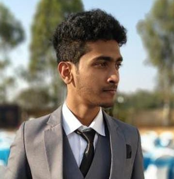
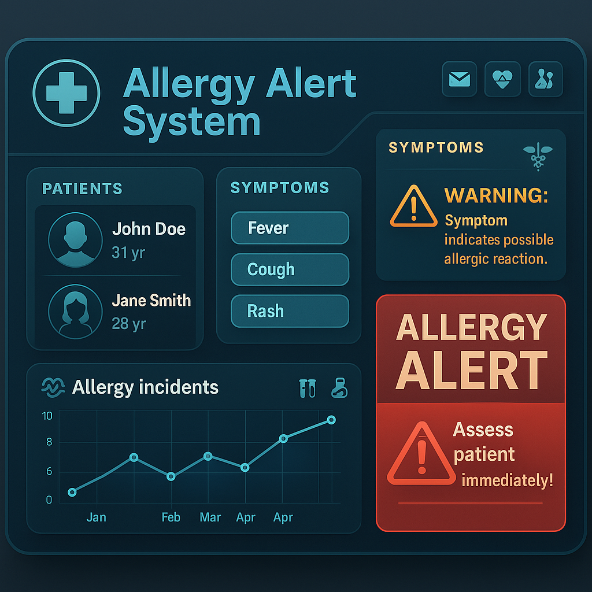
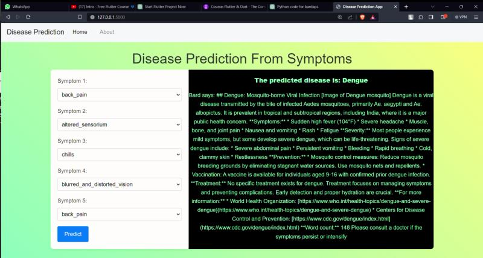
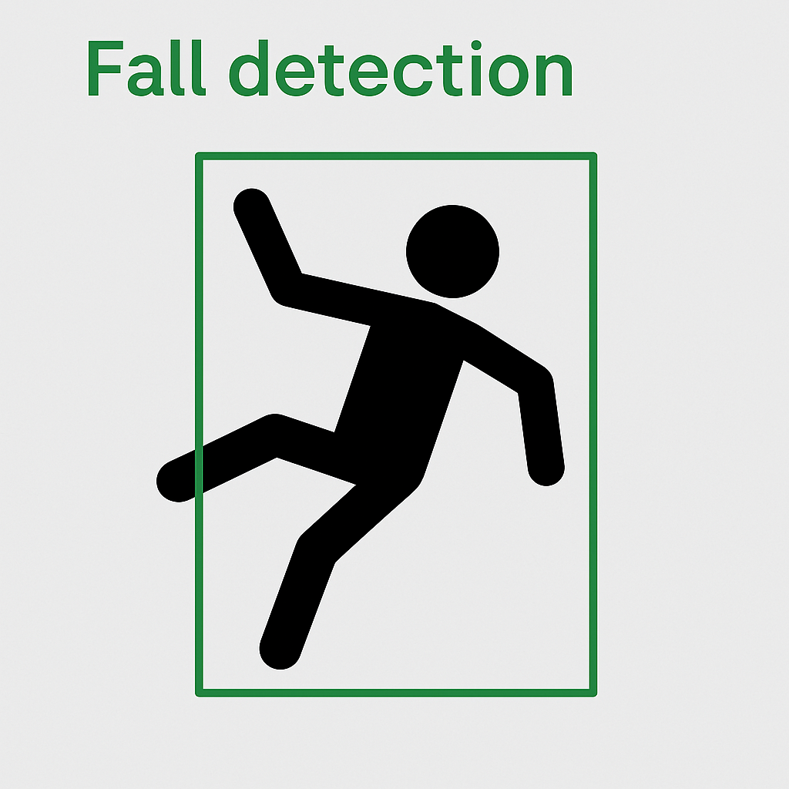
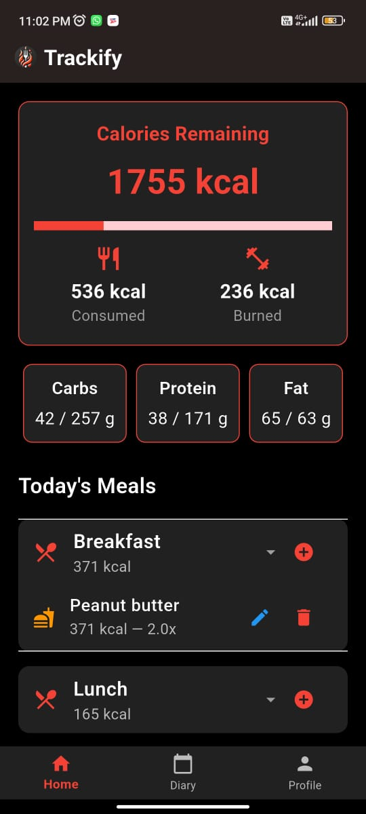

I’m Syed Rizwan Ali, a versatile and creative developer passionate about building intelligent and user-friendly digital experiences. I specialize in Full-Stack Web Development, Python development, and Flutter-based mobile applications.
I’ve developed innovative solutions such as an AI-powered disease prediction app, a fall detection system with emergency response, a calorie tracker with personalized AI advice, and an allergy alert web platform. Each project reflects my ability to blend design thinking with robust backend logic.
My toolkit includes technologies like React, Node.js, Django, Flask, Flutter, Docker, and databases such as MongoDB, MySQL, and PostgreSQL. With a strong foundation in APIs, YOLO-based vision models, and Python frameworks, I enjoy solving real-world problems through tech.
I thrive in collaborative environments, constantly explore emerging technologies, and aim to build impactful, forward-thinking solutions that genuinely help people and push boundaries.
A robust web application that alerts allergies if a patient has a particular symptom.
Role: Providing main functionality of the project.
Technologies: Node.js, Express, MongoDB, HTML, CSS, JavaScript, Docker


An application that predicts diseases based on symptoms of a patient.
Role: Designing eye-catching interface and integrating API functionality.
Technologies: Python with Flask and Bard API
A Python application that detects falls on camera and initiates an emergency call.
Role: Integration of Yolo v8 model and tuning it to detect people as target objects from OpenCV camera feed.
Technologies: Python with Twilio API, Ultralytics, OpenCV2, Pygame


An Android app that tracks calories intake, activates meals and burned kcal, and also gives AI advice.
Role: Implemented local database which includes user profile and historical data of meals, activities, and nutrients intake.
Technologies: Flutter, Dart, Gemini API, Shared Preferences
 Github
Github